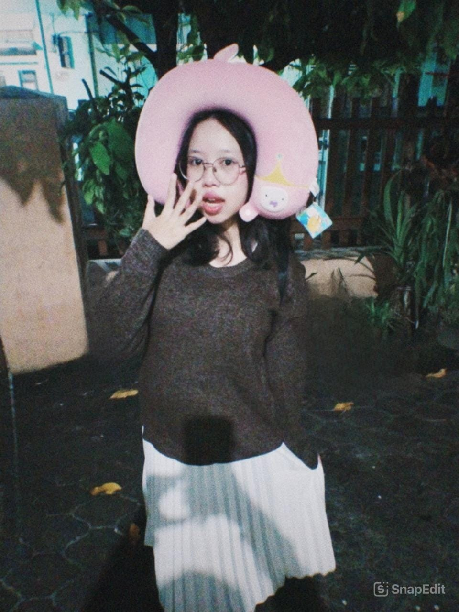
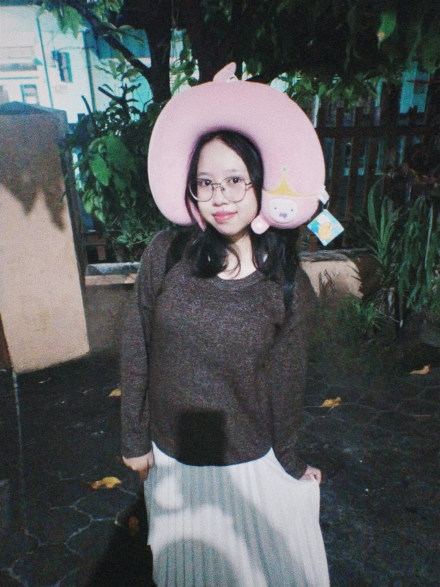
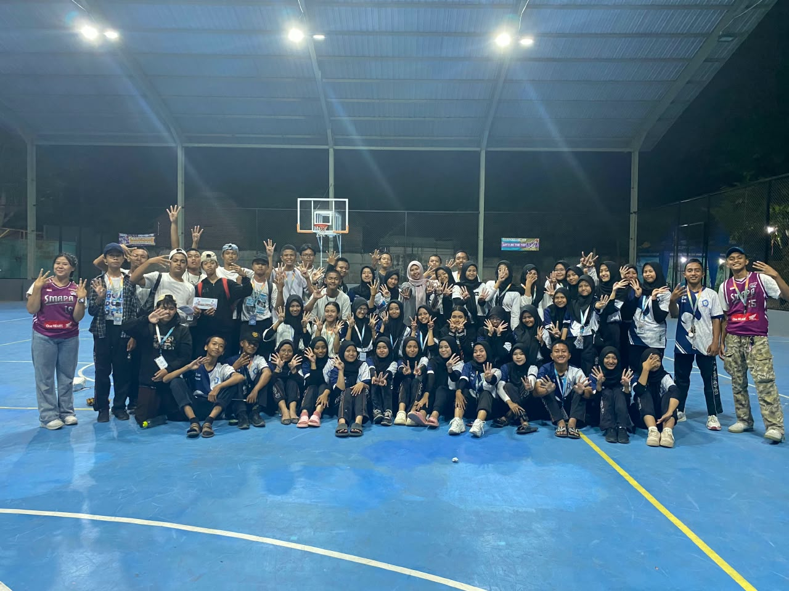
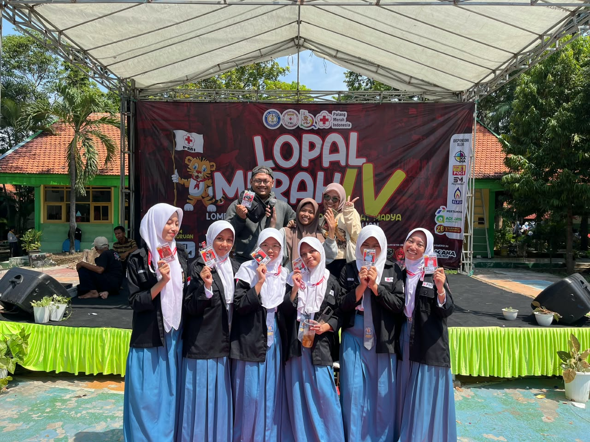

WELCOME TO MY PORTFOLIO ✨
I am Keisha Daniyah Rahma, an Information Systems student at Universitas Negeri Surabaya. I enjoy learning new things, exploring creativity, and developing my skills through different experiences.
Name: Keisha Daniyah Rahma
NIM: 26051214224
Study Program: S1 Sistem Informasi
University: Universitas Negeri Surabaya


MY CREATIVE SIDE
Here are some creative skills that I enjoy doing.
Creating and editing videos by combining clips, music, transitions, and visual elements.
Editing photos through color adjustments, filters, and other visual enhancements.
MY JOURNEY
Some of my experiences in school organizations.

Two Periods
Being part of the student council for two periods gave me opportunities to experience teamwork, responsibility, and organizational activities.

One Period
Through PMR, I gained experience in participating in organizational activities, working with others, and learning about responsibility.
LET'S CONNECT
Thank you for visiting my portfolio! Feel free to connect with me through LinkedIn.
Visit My LinkedIn ♡